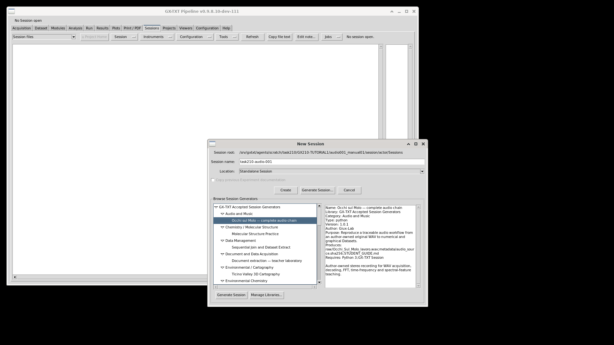
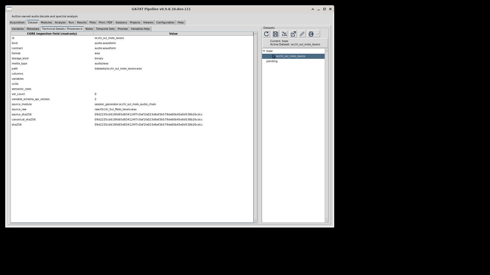
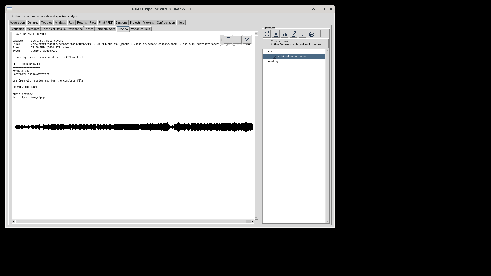
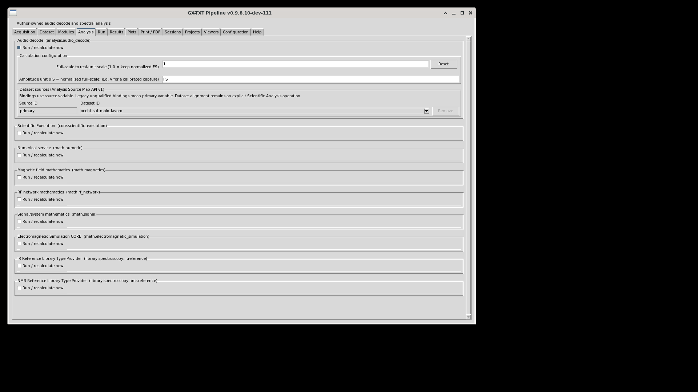
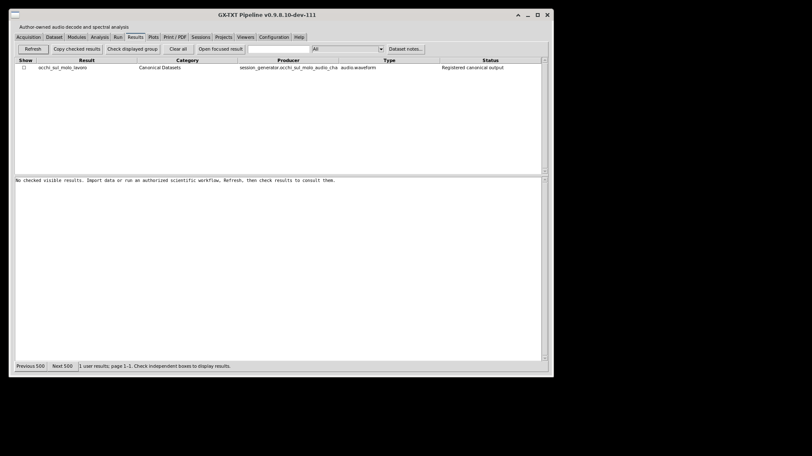
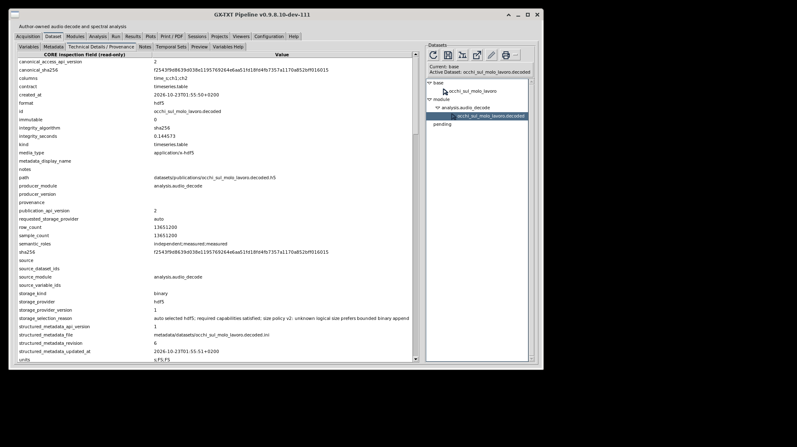
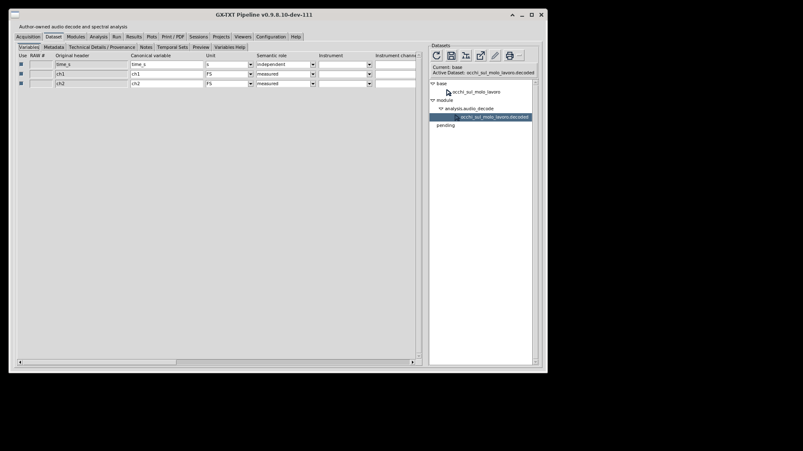
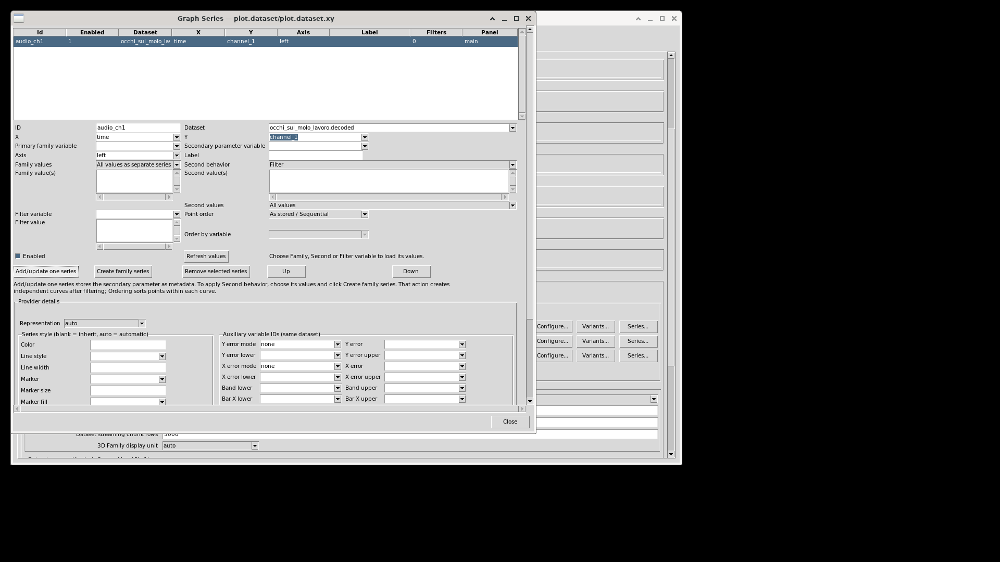
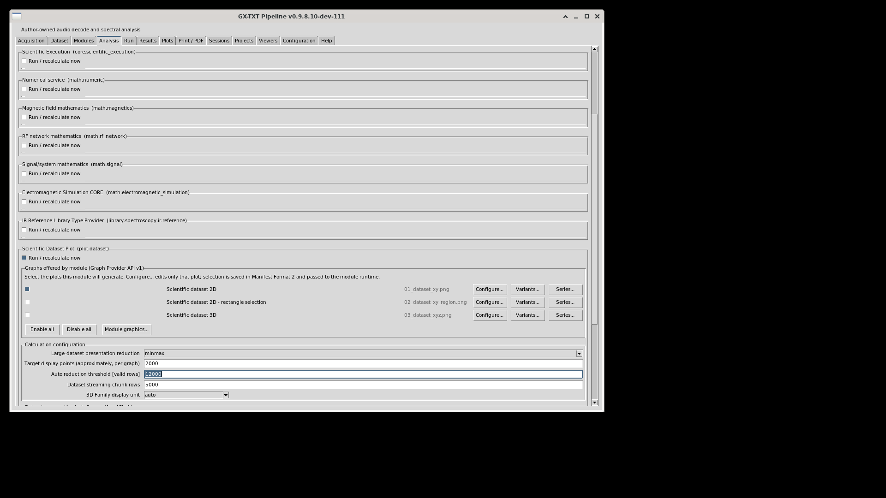

Start here
What changes between samples, spectra and pictures?
The aim is to follow one recording through genuine canonical data and compare its waveform, one short-block spectrum and a time-frequency view of one selected passage. A frequency bin is not an independent experiment; a musical spectral peak is not automatically the song's pitch. Preserve the recording's attribution and permission statement in every distributed derivative.
The teaching workflow below is only partly exercised. Audio001 establishes source generation/binary registration and its failed Decode. Separate Audio002 establishes one normal Decode PASS/publication and actual schema/settings readback, followed by an interrupted Plot with no terminal result. Later instructions remain the intended workflow, not completed outputs. Inspect actual components through normal application controls and retain failures alongside successful observations.
Optional local reading aids have not initialized. The complete text and native disclosures remain available.
Source baseline and prerequisites
This draft follows deposited GX-TXT 0.9.8.10-dev-110, source commit e2f19dcc4c32bbc8aa7410683ecb87febe9c2e68. Formal dev111 authoring is authorized after deposit; installation, activation, complete foundation, GUI acceptance and final release are not implied. Resolve actual displayed identities before use. Later control changes require a versioned inventory revision.
The historical Audio001 bounded attempt used GX-TXT 0.9.8.10-dev-111, frozen MAIN candidate df799e0c24459ee3d0548e8337722a0e80da3074, allocation 60441cb6-3103-4a9e-ac67-065aa8400e83, on 22 October 2026. This was a committed candidate, not an installed release. The GUI showed generator version 1.0.1, library ID org.giuxlab.gxtxt.accepted_generators and Audio Decode version 2.0.1. The actual library version was not read back. The component table retains preparation declarations; each packet’s actual readback is qualified separately below.
Separate Audio002 continuation: MAIN allocation cbeaee69-b84f-4397-b97a-2f903528b84f used frozen integration07 candidate afcf94214a11b7d4eab62eb6d65997a8077605b0, also dev111 and not an installed release. Normal Open used a new whole copy of Audio001; no second Generate/import occurred. Current original-binary Variable Schema API 3 differs from Audio001’s recorded API 2. The separate decoded publication’s canonical/publication access API 2 is a different field. The actual accepted-library version remains unknown; this continuation is not a new catalog-generation receipt.
Declared component identities — actual readback qualified above
| Component | Source identity and version |
|---|---|
| Generator library | org.giuxlab.gxtxt.accepted_generators · 1.0.0 |
| Generator | occhi_sul_molo_audio_chain · 1.0.1 |
| Audio Decode | analysis.audio_decode · 2.0.1 |
| Scientific Dataset Plot | plot.dataset · 4.2.4 |
| FFT Spectrum | analysis.fft_spectrum · 2.3.0 |
| Spectral Features | analysis.spectral_features · 1.2.0 |
| Time-Dependent FFT | analysis.time_dependent_fft · 1.3.3 |
When admitted in the common Guides host's Interactive Tutorial tab, this package's paired generator metadata supports the native Open Generate Session… action. That host action selects an already registered exact library/generator pair in the ordinary dialog. It does not install, enable or generate anything. Generation remains deliberate user input. This page has no callback, custom URI or generator bridge; actual discovery and host action are NOT_TESTED.
Stage 1 of 8 · Source generation observed
Generate a fresh Session through the registered dialog
In Sessions → New Session → Generate Session, inspect the actual catalog. The deposited source expects library org.giuxlab.gxtxt.accepted_generators version 1.0.0 and generator occhi_sul_molo_audio_chain version 1.0.1, titled Occhi sul Molo — complete audio chain. Confirm actual installed identities and versions. Do not silently install a missing library or pick a similarly named example. Record any owner guidance when the exact pair is unavailable.
Choose a new owned Session and inspect Copy previous Experiment documentation. For a clean teaching example, leave previous Experiment notes out where that choice is offered. Generate deliberately, then record the real Session identity, location and provenance. Cancellation/failure is evidence, not permission to manufacture a Session privately.
The current recipe already registers the WAV as a binary audio.waveform Dataset, source name occhi_sul_molo_lavoro, with zero numerical Variables. Inspect it through Dataset tools and the binary Preview. Do not follow older prose that would import this WAV a second time. A binary registration is not a decoded waveform or a completed analysis.
The bundled asset hash is 09d2235cb618fd65d834124f7c0af1fa023d6ef3b579de60b45e0d538b26cdcc. Previously inspected source-header facts are PCM16 stereo, 48,000 Hz, 13,651,200 frames and 284.4 s. They are source expectations, not this Session's decode readback. Retain RIGHTS.md: its recorded author permission concerns this exact GX-TXT demonstration recording, not arbitrary third-party music.




audio.waveform, zero tabular Variables, displayed source and canonical digest fields. No decoded numerical Dataset is shown.

Stage 2 of 8 · Audio001 failed; Audio002 publication observed
Decode through the actual module and inspect the result
Inspect Configuration enablement separately from per-Run Modules selection. The recipe initially selects only Audio Decode (analysis.audio_decode, source version 2.0.1), on the registered binary Dataset. Inspect its two settings: Full-scale to real-unit scale and Amplitude unit. Keep scale 1 and unit FS. Without a physical calibration, renaming samples to V, Pa or SPL is false.
Run normally and inspect Jobs, diagnostics and completion. Record actual module version, input, settings and output association. The declared publication is timeseries.table, an implicit uniform time axis with origin 0 and step 1/fs seconds, and float64 channel Variables. Read the actual Dataset/Variable IDs, enabled state, dimensions, counts, sampling rate, units and provenance through the GUI. Do not fill output IDs from a naming formula or inspect storage files as a substitute for this public consumer check.




Audio002 — one normal Decode PASS and actual publication
The separately allocated continuation opened MAIN’s new whole Session copy and ran Audio Decode once on occhi_sul_molo_lavoro, scale 1/FS. The parent operator record reports a completion dialog and settled plan PASS. The original Audio001 failure remains unchanged; this later result does not establish its exclusive cause.
| Actual readback | Qualification |
|---|---|
| Dataset / contract | occhi_sul_molo_lavoro.decoded, timeseries.table, HDF5, media type application/x-hdf5. |
| Rows and sample count | Both display 13,651,200. This is actual publication metadata, not an independent examination of every sample. |
| Stable IDs → displayed names / units | time → time_s [s], channel_1 → ch1 [FS], channel_2 → ch2 [FS]; all enabled. Two channel Variables do not establish physical microphone/speaker identity. |
| Canonical digest | f2543f9d8639d038e1195769264e6aa51fd18fd4fb7357a1170a852bff016015. The owner’s post-interruption byte receipt matches; byte identity is not numerical accuracy. |
| Sampling readback | The parent’s terminal producer-log record reports 48,000 Hz and two channels. These four safe figures do not independently expose sampling-rate/axis metadata. |
| Detailed schema and full lineage | Actual origin/step, dtype/dimensions, first/last values and complete sample fidelity remain unverified. Displayed producer-version/provenance/source-ID fields were blank; do not fill them from source expectations. |
The implicit origin 0, step 1/fs and float64 channel declarations in the teaching instructions above remain source expectations until detailed normal GUI readback. Source-header expectations are separate from the actual producer-log rate and published count. No numerical payload or private log is bundled here.




Stage 3 of 8 · Configured and attempted; terminal result unestablished
Plot the genuine waveform with bounded presentation
Before each new analysis stage, enable its target in Configuration → Modules if needed and inspect the owner's dependency guidance. In Modules/Run, select the intended calculation and clear earlier modules' Run selections unless deliberately recalculating them. Confirm the pending Run list before starting. Keep Audio Decode out of subsequent Runs when reusing its published Dataset. Bind each later module to the actual preceding output; a previous module's source choice is not a binding for the next one. Follow service owners' controls without adding Run selections for service-only dependencies. Use the owning presentation/Variants rerender action when changing cached presentation.
Use Scientific Dataset Plot (plot.dataset, source version 4.2.4) on the actual decoded time and channel 1. Start with a bounded display, for example minmax reduction and a target of 2,000 points where offered. Record the actual policy, source identity and time range. This preserves extrema for presentation; it neither reduces the canonical decoded samples nor proves every sample is visible. Even a bounded overview may scan source data: measure its real first usable render rather than assuming speed.
Add the genuine second channel as a clearly labelled second trace or shared-X panel where supported. Inspect title, axes, units, grid, ticks, styles, series order, legend, panels, navigation and real redraw behavior. Signed samples are ineligible for an ordinary whole-domain log-Y view; a time axis including zero is ineligible for ordinary whole-domain log-X. A histogram, if legitimately available, describes sample amplitudes and discards temporal order. It is not a frequency spectrum or repeated-measurement uncertainty.
A viewport zoom changes the display. It does not by itself create a scientific Selection. Preserve this distinction for the later Temporal Set.
Give the Series a valid ID before Add/update one series. In this attempt an omitted ID was refused, then audio_ch1 was accepted normally. Malformed target-point text caused by operator input tooling was corrected; the final value 2,000 was visually verified before the single Plot dispatch. These were setup corrections, not a failed Plot calculation or retry.
The private supervisor then recorded signal 15 before the cap; its sender/origin is not established. The operator did not request cancel/Close/kill, and performed no retry or relaunch. This is an interrupted attempt, not a diagnosed Plot crash or normal completion. Full current-source Preview/Plot interaction remains unverified.




Stage 4 of 8 · NOT_TESTED
Compute one finite block spectrum
Inspect FFT Spectrum (analysis.fft_spectrum, source version 2.3.0) and choose the actual decoded source, uniform independent time and channel 1. Use an initial finite calculation: fixed_block, 16,384 samples, block position center, Hann weighting and mean detrend. Fixed-block auto is not a valid length. Record actual resolved start sample, count, sampling rate and settings.
Inspect the current controls, including data Selection, Temporal Set, weighting window, full-record/fixed-block/Temporal-Set mode, length, block position, zero-based explicit start, detrend, fundamental selection, tracked harmonics and spur/guard-bin policies. Record all actually offered options; exercising every length and weighting window is not necessary to demonstrate a control's purpose. Temporal-Set mode treats members separately and rejects an additional module Selection; it is not the time-frequency renderer.
Perform one normal Run. Inspect its actual report and published spectrum.table: the source declares frequency, amplitude and magnitude_dbc. Read their real IDs, units, values and normalization/reference descriptions. This module declares no automatic graph offerings. Create the spectrum graph through the compatible Plot Dataset GUI on the real published frequency and amplitude.
If exploring magnitude_dbc, label its relative dB reference separately. Do not take an ordinary logarithm of negative dBc values, zero frequency or zero amplitude. An eligible positive-frequency view requires an explicit supported DC-exclusion/domain policy. At an actually retained 48 kHz rate, Nyquist is 24 kHz; this is a sampling bound, not measured acoustic bandwidth. fs/N is bin spacing, not a guaranteed physical resolving power. THD/SINAD/ENOB values are not a verdict on the musical quality of this recording.
Stage 5 of 8 · NOT_TESTED
Explore spectral descriptors without changing their meaning
Where the finite teaching slot permits, run Spectral Features (analysis.spectral_features, source version 1.2.0) on the genuine spectrum's frequency and non-negative amplitude, choose amplitude semantics and document the DC-exclusion choice. Negative dBc is not eligible as non-negative amplitude.
Read the actual summary and distribution, their quantities/units and the three declared public Plot Dataset variants: relative power, normalized bin power and cumulative power. Inspect auto-created variants before creating duplicates. Do not label a PSD-bin sum without bin width as integrated physical power, or use bins as a population of independent repeated measurements. A summary scalar does not become a time series by drawing a line through unrelated metrics.
Stage 6 of 8 · NOT_TESTED
Retain one real source-time interval and build its Temporal Set
Return to an eligible single-source waveform graph. Use Select area to retain one bounded passage of approximately 10 s as a source-time X-range. Inspect the actual numerical limits, Dataset, time Variable, Selection identity and type. Mouse-picked limits are observations; this draft does not promise an exact interval. Select data… → Save Selection produces member/row selection and is not interchangeable with the required source-coordinate X-range parent.
In Variables → Temporal Sets… → New Window Set…, select the actual time Variable and that Parent Selection. Choose Duration basis, window size 1 s, step 0.5 s, unit s and partial-window policy Drop. Inspect and retain the real resolution summary, member count and source intervals. Do not prefill 19 windows or invent a registry identity. A Temporal Window Set determines sample membership; the Hann FFT weighting window is a different operation.
If the supported source selection or Temporal Set route fails, retain the affected evidence and route it through MAIN to its owner. Do not silently switch to the entire song or write a private Temporal Set.
Stage 7 of 8 · NOT_TESTED
Compute and compare the passage's time-frequency views
Use Time-Dependent FFT (analysis.time_dependent_fft, source version 1.3.3) on the actual decoded source/channel 1 and retained Window Set. Select Auto NFFT, Hann weighting, mean detrend, amplitude representation and separate per-window data export none. The numeric default 4,096 is too short for a 1-s window at 48 kHz; Auto must resolve against the actual window length.
Keep overview and surface enabled, with optional Window spectrum plots initially off. Run once through the real GUI. Read the actual Job, complete scientific Dataset, quantities/units, Window Set and time convention. Source publication is a long-form table.generic with time, frequency, spectral value and zero-based window_index. GUI window choices are one-based. Time is the midpoint of the first and last included sample coordinates, not an assumed nominal midpoint.
Compare the real overview and surface. The time axis belongs to this selected passage; the other axes are frequency and the declared spectral quantity, not space or temperature. Current rendering source publishes explicitly derived, bounded display Datasets and persistent Plot Dataset references. Retain their identity, reduction settings and relationship to the full scientific result. A PNG alias is not another independent result or native 3D geometry.
For a finite window comparison, enable Window spectrum plots with only the first, middle and last actual resolved one-based indices. Choose an overlay preview, informative index/time labels, and individual export off. It defaults on when this optional offering is enabled: inspect this before Run. Use one meaningful presentation-only variant/rerender and record actual cache behavior. If individual export is later taught, select those same three windows and record the files really written. All windows is not a three-file action.
The original time-frequency offerings lack the declared original-provider interactive-3D hooks. Consult scientific 3D only through an actually admitted generated Plot Dataset XYZ graph where available. Do not rename a provider or teach camera controls on a raster image. Native camera Fit, numerical-axis Fit and PNG pixel Fit are three separate operations.
Stage 8 of 8 · NOT_TESTED
Complete this tutorial's actual Plots coverage and persistence
Reconcile every function in the actual build's full versioned Plots inventory, using the genuine waveform, spectrum, spectral-feature variants, three-window comparison and time-frequency Dataset contexts. Preserve the historical 527-entry source seed; it is not this GUI's measured denominator. Observe all actual menus, direct controls, settings and options. Record success, failure, disabled/absent context or scientific inapplicability with evidence. A short initial packet cannot mark this matrix complete.
Stereo/three-window contexts supply meaningful multi-series legends where supported, even though the overview and surface descriptors do not declare legends. No invented error bars, confidence bands, physical calibration or chemical-family data are needed to exercise controls. Keep provider aliases, containers/leaves and generated variants distinct. When selecting from a reduced display Dataset, preserve that Dataset's lineage rather than claim that its rows are automatically the full FFT or original waveform samples.
Through actual GUI owners, exercise Notes, a retained owned clone's Edit/Delete, refresh/rerender, PNG/presentation export, graph ZIP capture/import and Print/PDF where eligible. Retain exact paths, files and outcomes. A Print dialog is not proof of physical printing. Exported figures retain source identity, FS/dB meaning, recording rights and passage/window policy.
Save, close and reopen through ordinary Session controls. Verify real canonical results, graph/variant identities, source Selection, Temporal Set, labels, settings and Notes persistence. Record first usable display and comparable navigation/resize/redraw latency, keyboard/mouse behavior and missing icons or freezes. Record only actually observed results and retained state; separate operator chronology from measured comparable latency. MAIN receives affected owner gaps; other supported tutorial branches can continue.
This audio tutorial needs its own complete Plots matrix
Audio001’s binary Dataset Preview is recorded separately from Plots coverage. Audio002 supplies decoded publication and observed Series/reduction settings, but no terminal waveform. These finite settings observations do not form a complete control inventory or an executed full matrix. Later unexecuted branches remain NOT_TESTED, not scientifically inapplicable.
The complete actual Audio Plots inventory is not yet reconciled: its revision and denominator remain unknown; the few observed configuration controls do not define the full inventory or establish all eligibility. No thermal observation or 26-entry thermal menu subset is imported. The historical 527-row source seed remains planning history, not a live denominator. Every future actual function must receive an audio-specific context, outcome, scientific reason and evidence. No coverage percentage is available.
Prospective contexts — qualified partial observations, full matrix unfinished
| Data stage | Scientific condition | Outcome |
|---|---|---|
| Binary-source Plots eligibility | Opaque WAV with zero numeric Variables before decode. Its supported binary Dataset Preview was observed separately in stage 1. | Plots controls NOT_TESTED. |
| Decoded waveform | Actual decoded time/channel IDs and s/FS units were read; audio_ch1 and minmax/2,000 were configured. Signed/zero domains restrict ordinary log scales. | Plot attempted, last RUNNING before interruption; terminal presentation and full control coverage unestablished. |
| Published block FFT | Actual frequency, non-negative amplitude and separately interpreted dBc; channel/block/window/normalization remain attached. | NOT_TESTED |
| Spectral distribution | Actual Features outputs retain relative/bin/cumulative semantics, not repeated-observation uncertainty or integrated PSD-bin sum. | NOT_TESTED |
| Time-frequency science | Actual passage time, frequency and spectral quantity. Full science, compact cache and derived display Datasets remain distinct. | NOT_TESTED |
| Window comparison | Three actual resolved windows supply a bounded overlay and legitimate legend; labels refer to the chosen passage. | NOT_TESTED |
| Scientific 3D / image inspection | Only admitted actual XYZ geometry supports native camera actions. PNG pixel Fit/crop is a separate presentation operation. | NOT_TESTED |
| Common actions and persistence | Actual menus/dialogs, axes, variants, annotation, selection, Notes, Clone, ZIP/import, Print/PDF and reopen each need their own outcome. | NOT_TESTED |
Machine-readable planning and the empty actual-row ledger are in coverage/plots.json. Source presence alone establishes neither a disabled control nor scientific inapplicability. A future shared inventory revision still requires independent outcomes for this tutorial and each of the other three tutorials.
Evidence and remaining checks
The nine figures are unchanged safe captures: five from Audio001 and four from the separate Audio002 continuation. All 24 original001 and 48 original002 captures remain in the private audit; private Run-log frames are not packaged. The decoded publication exists in the retained operated copy but is not distributed here. No WAV, HDF5 samples or computed spectrum is supplied. Historical Audio001 observations are preserved byte-identically; Audio002 observations are a separate record. Source-header expectations, producer-log rate and actual displayed metadata remain distinct.
| Required observation | State |
|---|---|
| Runtime/catalog, generation and binary registration | Observed in the frozen dev111 candidate; source registration and binary Preview only. Library version not read back. |
| Decode, canonical Variables and waveform Preview | Audio001 Decode FAILED_BUG. Separate Audio002 normal Decode PASS/publication: 13,651,200 rows, stable IDs/names and s/FS/FS units observed; detailed axis/schema and meaningful Preview remain unverified. |
| Audio002 bounded waveform | Accepted Series and reduction settings observed; one Plot attempted, last RUNNING before interruption. No terminal Graph or useful waveform established. |
| FFT and optional spectral descriptors | NOT_TESTED: no FFT or later dependent analysis was performed. |
| Source X-range, Temporal Set and time-frequency results | NOT_TESTED: no FFT or later dependent analysis was performed. |
| Full independent actual Plots inventory/matrix | NOT_TESTED; unknown denominator. |
| Persistence, captions, real timings and scientific/visual review | Audio001 Save/normal close only; Audio002 interrupted without normal Save/Close. Reopening/retained decoded settings remain unverified. Captures reviewed only for the qualified metadata/settings claims above. Comparable latency/redraw and full scientific/visual acceptance NOT_TESTED. |
| HTML/CSS/JS rendering, Guides discovery/native action and final ZIP | NOT_TESTED. |
Provenance, rights and review scope
provenance.json pins the committed parent prose, source intake, actual candidate and unchanged figure identities. evidence/observations.json remains the unchanged historical001 record; evidence/audio002.json separately records the successful Decode publication and interrupted waveform attempt. On 22 October 2026, Generate was dispatched at 22:50:21 UTC, Decode at 22:51:35, the failure was observed at 22:52:05, Save confirmation at 22:54:19 and normal close at 22:54:30. In Audio002, Decode was dispatched at 23:55:32 UTC on 22 October, Plot at 23:59:33, and the display was found unavailable around 00:00 UTC on 23 October. The supervisor records signal 15 of unknown origin. These operator/tool/capture timestamps are chronology, not measured execution or rendering latency. The recording's author granted distribution for this GX-TXT demonstration; no general music licence is asserted. This package contains no recording. GPL-3.0-or-later covers the project-authored prose/layout/local reading aids, with unchanged project licence text in LICENSE; it does not relicense the recording.
GX210-TUTORIAL1 owns final scientific, visual and tutorial quality. MAIN alone integrates/releases and allocates GUI/validation access. Full workflow, host, matrix, performance and final visual reviews remain unfinished. Reading checklist marks never change evidence or scientific outcomes.